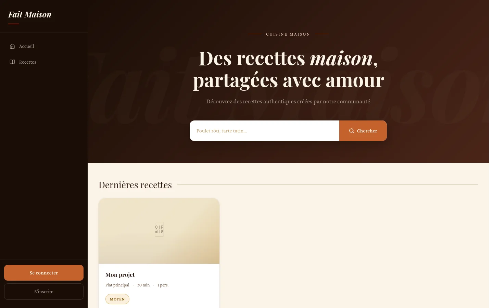
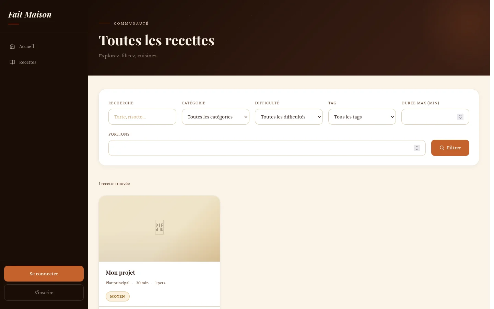
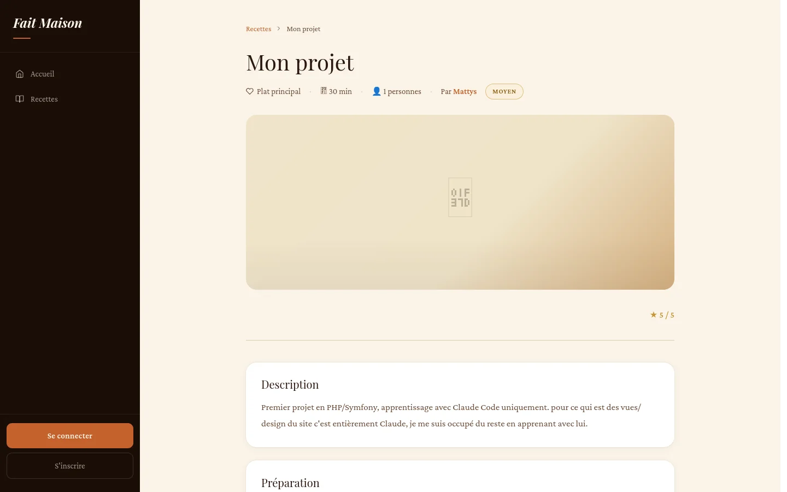
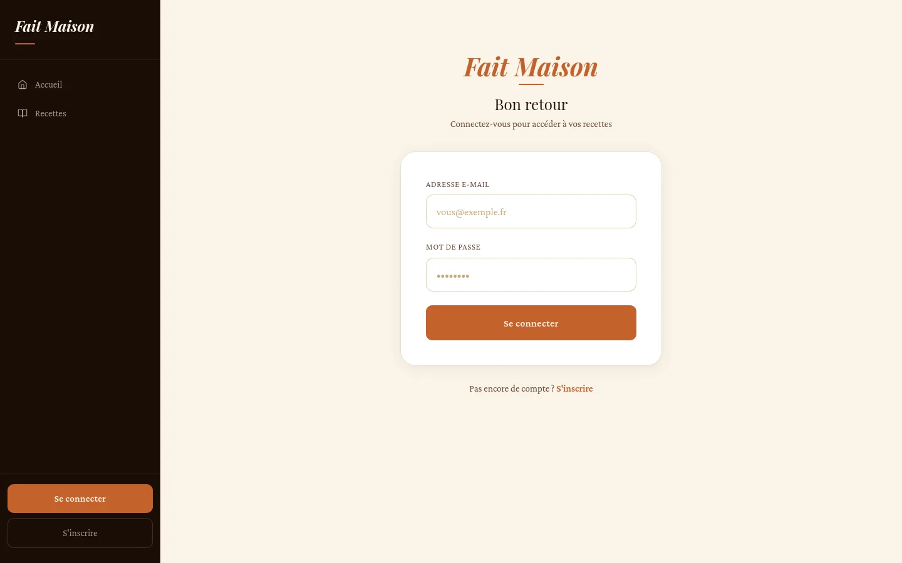
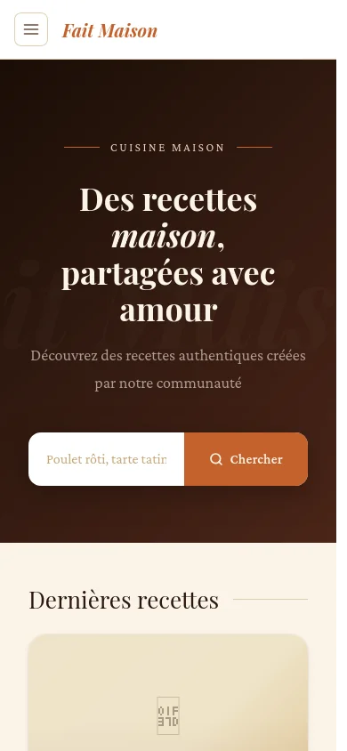

// recettes
Publier et trouver
- CRUD complet, limité à l'auteur de la recette
- Photo avec aperçu en direct et glisser-déposer
- Filtres catégorie, tag, difficulté, durée — conservés pendant la pagination
- Brouillon ou publication, 12 recettes par page
Projet personnel · 2026
Un réseau social de partage de recettes, dans l'esprit de Marmiton : publication avec photo, notes, likes, commentaires, abonnements, fil d'actualité personnalisé et un back-office de modération. Conçu, développé, testé et déployé seul, pour apprendre Symfony de bout en bout.

C'est mon plus gros projet à ce jour, et mes débuts en PHP avec Symfony : je l'ai lancé pour me préparer à mon stage. Je voulais un projet complet, mené seul, qui m'oblige à toucher à tout ce qu'une vraie application web demande : modéliser une base relationnelle, gérer des comptes et des droits, stocker des fichiers envoyés par les utilisateurs, écrire des tests et mettre le tout en production.
Le thème des recettes s'y prête bien : il est parlant pour n'importe qui, et il justifie naturellement des relations riches (un auteur, des catégories, des tags, des notes, des likes, des commentaires, des abonnements entre utilisateurs) et une modération côté administrateur.
// recettes
// social
fetch), sans rechargement de page// découverte
// administration
ROLE_ADMIN

Une application Symfony classique en MVC, rendue côté serveur avec Twig. Les contrôleurs restent fins : la logique d'accès aux données vit dans les repositories (requêtes DQL), l'upload d'images dans un service dédié, et le blocage des comptes bannis dans un event subscriber branché sur la sécurité.
Twig + design system Tailwind CSS v4, JS natif pour l'AJAX
ImageUploader (photos, avatars) · BanSubscriber (sécurité)
Le fil propose des recettes des catégories que j'ai déjà likées, en excluant celles déjà likées et les miennes, triées par popularité puis par fraîcheur.
Tout est fait en base avec deux sous-requêtes DQL. Si l'utilisateur n'a encore rien liké, on retombe sur les tendances pour ne jamais afficher un fil vide.
public function findRecommended(User $user): array
{
// Sous-requête : catégories des recettes likées par l'utilisateur
$likedCategoriesDql = $this->getEntityManager()->createQueryBuilder()
->select('IDENTITY(r2.category)')
->from(Like::class, 'l2')
->join('l2.recipe', 'r2')
->where('l2.user = :user')
->getDQL();
// Sous-requête : IDs des recettes déjà likées
$likedRecipesDql = $this->getEntityManager()->createQueryBuilder()
->select('IDENTITY(l3.recipe)')
->from(Like::class, 'l3')
->where('l3.user = :user')
->getDQL();
$results = $this->createQueryBuilder('r')
->where('r.isPublished = true')
->andWhere('r.author != :user')
->andWhere('IDENTITY(r.category) IN (' . $likedCategoriesDql . ')')
->andWhere('r.id NOT IN (' . $likedRecipesDql . ')')
->setParameter('user', $user)
->orderBy('SIZE(r.likes)', 'DESC')
->addOrderBy('r.createdAt', 'DESC')
->setMaxResults(10)
->getQuery()
->getResult();
// Fallback si aucun like : recettes récentes hors propres recettes
if (empty($results)) {
return $this->createQueryBuilder('r')
->where('r.isPublished = true')
->andWhere('r.author != :user')
->setParameter('user', $user)
->orderBy('SIZE(r.likes)', 'DESC')
->addOrderBy('r.createdAt', 'DESC')
->setMaxResults(10)
->getQuery()
->getResult();
}
return $results;
}Les actions sociales répondent en JSON quand elles sont appelées en AJAX (le bouton se met à jour avec le nouveau compteur), et font une redirection classique sinon.
Résultat : l'interface est fluide, mais le site reste utilisable sans JavaScript.
#[IsGranted('ROLE_USER')]
#[Route("/recette/{id}/liker", name: 'app_like_toggle', methods: ['POST'])]
public function toggle(Request $request, LikeRepository $likeRepository, EntityManagerInterface $em, Recipe $recipe)
{
$currentUser = $this->getUser();
if (!$currentUser instanceof User){
throw $this->createAccessDeniedException();
}
$like = $likeRepository->findOneBy(['user' => $currentUser, 'recipe' => $recipe]);
if ($like){
$em->remove($like);
} else {
$newLike = new Like();
$newLike->setRecipe($recipe);
$newLike->setUser($currentUser);
$em->persist($newLike);
}
$em->flush();
if ($request->isXmlHttpRequest()){
return $this->json([
"liked" => !isset($like),
"count" => $likeRepository->count(['recipe' => $recipe])
]);
} else {
return $this->redirectToRoute('app_recipe_show', ['id' => $recipe->getId()]);
}
}
Plutôt que de vérifier le bannissement dans chaque contrôleur, un
event subscriber écoute l'événement CheckPassportEvent
du composant Security.
Un utilisateur banni est refusé avant même d'être authentifié, avec un message qui donne la date de fin et le motif.
class BanSubscriber implements EventSubscriberInterface
{
public static function getSubscribedEvents(): array
{
return [CheckPassportEvent::class => 'onCheckPassport'];
}
public function onCheckPassport(CheckPassportEvent $event): void
{
$user = $event->getPassport()->getUser();
if (!$user instanceof User){
return;
}
if ($user->isBanned()){
throw new CustomUserMessageAuthenticationException(
'Votre compte a été suspendu jusqu\'au ' . $user->getBannedUntil()->format('d/m/Y à H:i') . ' - ' . $user->getBanReason()
);
}
}
}
Chaque push sur master déclenche une intégration continue
GitHub Actions avec une vraie base PostgreSQL. Les tests couvrent l'upload d'images,
l'accueil, la connexion et la protection des recettes ; les interactions sociales sont
les prochaines à couvrir.
Commit sur master
PostgreSQL de test, migrations, build Tailwind, phpunit
composer install, importmap, Tailwind, compilation des assets
Warmup du cache puis migrations:migrate automatique
FrankenPHP + Caddy, healthcheck et redémarrage auto


01
J'avais prévu une gestion fine des ingrédients (entités Ingredient
et RecipeIngredient). Je l'ai retirée pour garder un modèle
que je maîtrise et livrer les fonctionnalités sociales.
02
Le déploiement sur Railway m'a appris l'ordre de build (dépendances, assets, migrations) et à rendre la mise en production reproductible avec un fichier de configuration versionné.
03
Un fil vide sans likes, une table nommée like (mot réservé SQL),
un compte banni qui tente de se connecter : ce sont ces détails qui font la différence
entre une démo et une application.